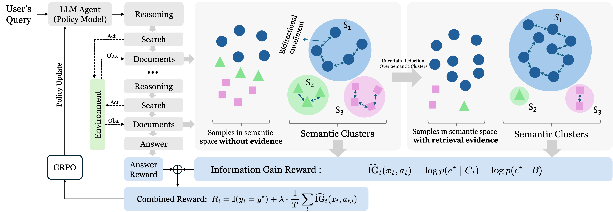
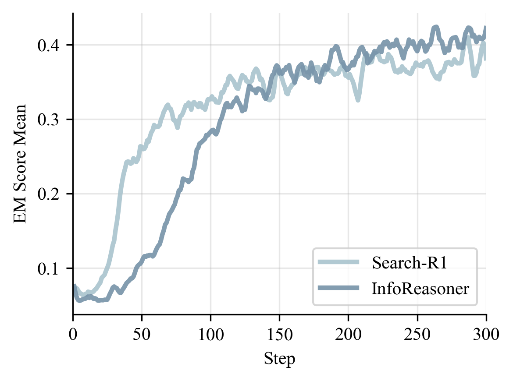
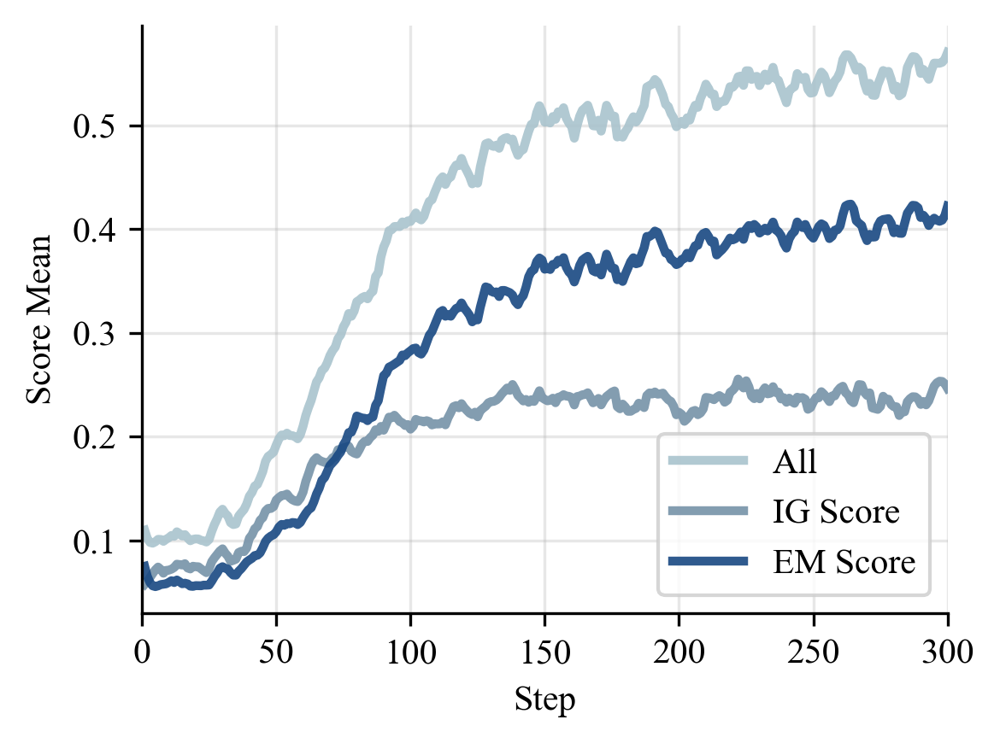
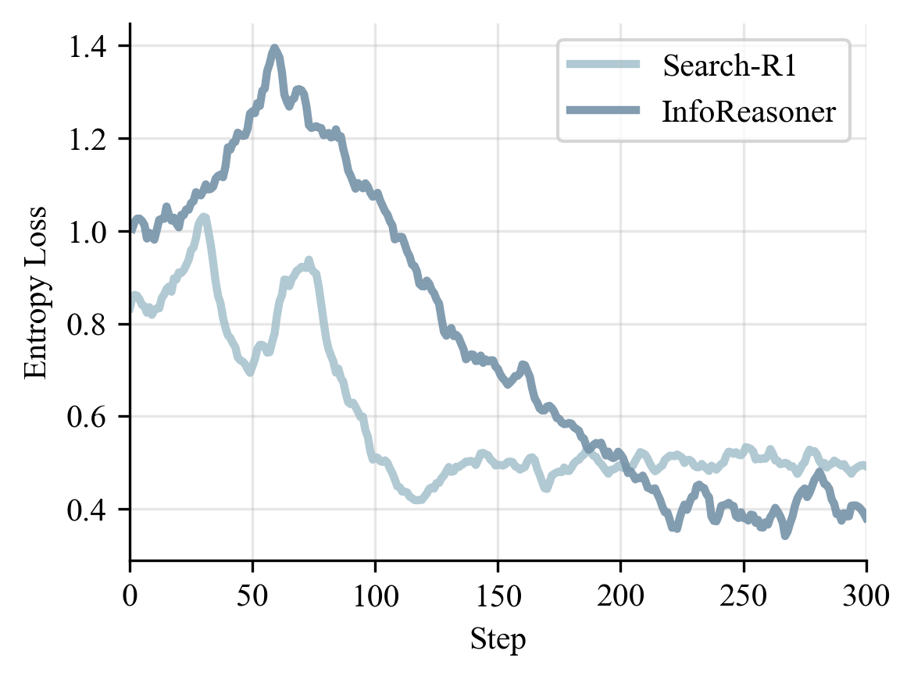
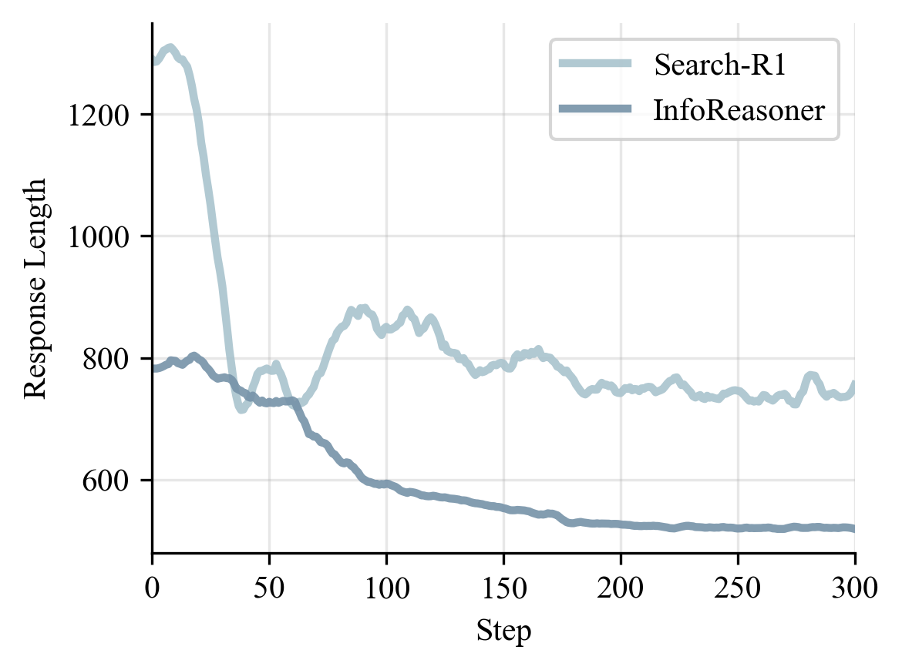
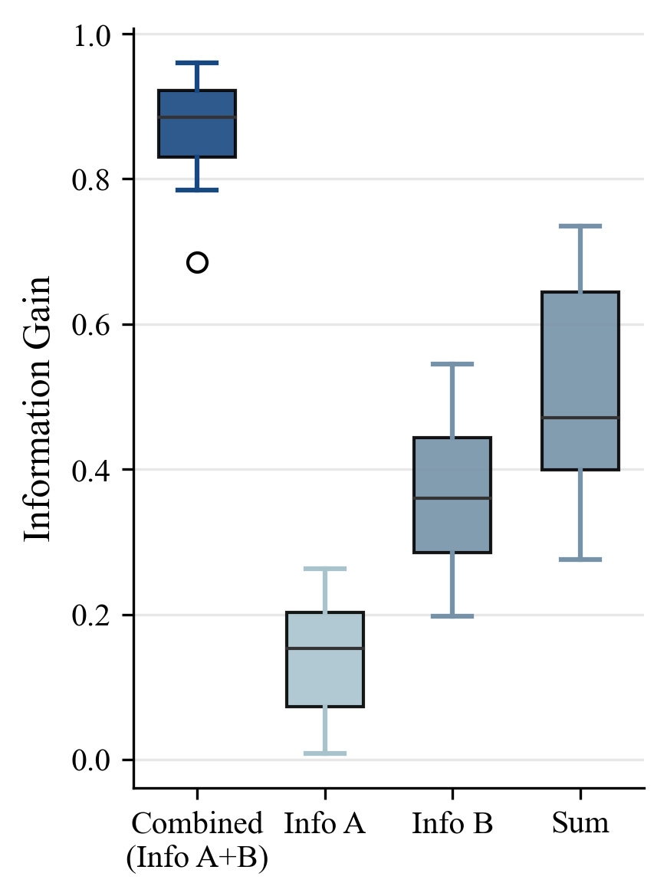
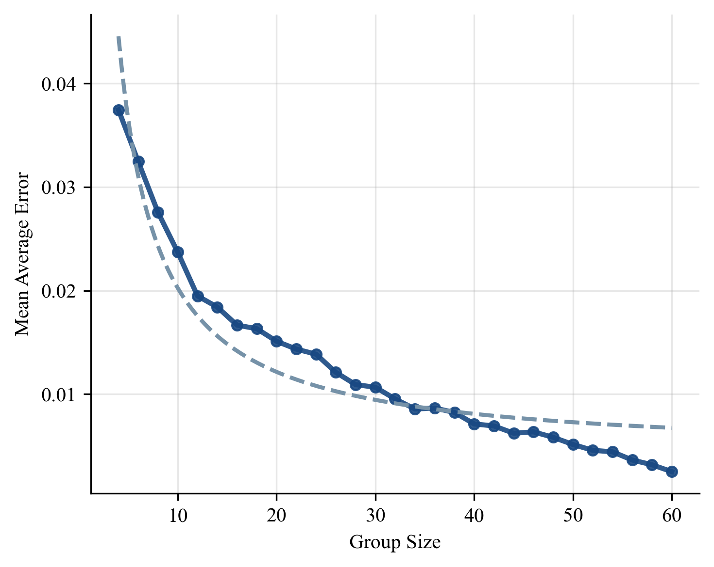

Retrieval gives an LLM agent a way to look outside its parametric memory. But learning when to search, what to search, and whether a search result actually helps is still difficult. In most training pipelines, the agent only receives a final answer reward. That reward arrives too late to explain which retrieval action changed the reasoning trajectory.
A good search step does not always contain the final answer directly. Sometimes it removes a wrong hypothesis. Sometimes it makes one candidate answer much more plausible than the rest. If training only asks whether the final answer is correct, this useful intermediate behavior is easy to miss.
Imagine asking the model the same question several times. Before retrieval, its answers may scatter across multiple semantic possibilities. After a useful search, those answers should concentrate around a better supported answer class. This concentration is information gain.
InfoReasoner turns that intuition into a reward. It samples answers with and without retrieved evidence, groups equivalent answers by meaning, estimates semantic belief distributions, and rewards retrieval when evidence increases support for the correct semantic answer class.
For a reasoning state, the model samples candidate answers before and after a retrieval action.
Answers that express the same meaning are grouped together, so the reward tracks meaning rather than surface wording.
The semantic answer clusters form belief distributions, and their entropy describes how uncertain the model is.
A search action receives intrinsic reward when retrieved evidence increases probability mass on the correct semantic class.
The information-gain reward is combined with final answer reward, then used to train the retrieval policy with GRPO.

We evaluate InfoReasoner on seven question-answering benchmarks, including both single-hop and multi-hop settings. The results show that information-gain reward improves retrieval-augmented reasoning at both 3B and 7B scales.
| Method | NQ | TriviaQA | PopQA | HotpotQA | 2Wiki | MuSiQue | Bamboogle | Avg. |
|---|---|---|---|---|---|---|---|---|
| RAG (3B) | 0.348 | 0.544 | 0.387 | 0.255 | 0.226 | 0.047 | 0.080 | 0.270 |
| Search-R1-3B-Instruct | 0.405 | 0.566 | 0.354 | 0.316 | 0.224 | 0.056 | 0.184 | 0.301 |
| InfoReasoner-3B | 0.453 | 0.634 | 0.442 | 0.344 | 0.324 | 0.080 | 0.144 | 0.346 |
| Search-R1-7B-Instruct | 0.407 | 0.590 | 0.390 | 0.340 | 0.194 | 0.080 | 0.360 | 0.337 |
| AutoRefine-7B-Base | 0.439 | 0.608 | 0.402 | 0.410 | 0.242 | 0.116 | 0.368 | 0.369 |
| InfoReasoner-7B | 0.447 | 0.614 | 0.416 | 0.414 | 0.302 | 0.120 | 0.424 | 0.391 |
The ablation tells the same story from another angle. A moderate information-gain weight works best. Too little makes the retrieval signal weak. Too much can over-emphasize intrinsic reward and drift away from final answer quality.
| Setting | NQ | TriviaQA | PopQA | HotpotQA | 2Wiki | MuSiQue | Bamboogle | Avg. |
|---|---|---|---|---|---|---|---|---|
| \(\lambda=1.0\) | 0.435 | 0.600 | 0.432 | 0.320 | 0.274 | 0.052 | 0.128 | 0.320 |
| \(\lambda=0.8\) | 0.436 | 0.590 | 0.426 | 0.292 | 0.238 | 0.032 | 0.112 | 0.304 |
| \(\lambda=0.6\) | 0.452 | 0.634 | 0.442 | 0.344 | 0.324 | 0.080 | 0.144 | 0.346 |
| \(\lambda=0.4\) | 0.443 | 0.602 | 0.424 | 0.324 | 0.266 | 0.058 | 0.088 | 0.315 |
| \(\lambda=0.2\) | 0.448 | 0.618 | 0.432 | 0.322 | 0.288 | 0.044 | 0.136 | 0.327 |
| \(\lambda=0.0\) | 0.426 | 0.538 | 0.426 | 0.294 | 0.254 | 0.040 | 0.118 | 0.299 |
Beyond short-answer QA, InfoReasoner also transfers to more agentic settings. On MATH500 with Python tool execution, InfoReasoner-7B reaches 85.8%. On WebDetective, a long-horizon deep-search benchmark, InfoReasoner-3B improves Pass@1 from 26.5% to 30.0% over Search-R1-3B-Base.
The training curves explain why the method works. InfoReasoner explores more in the early phase because useful retrieval can receive positive reward even before the final answer is correct. After that phase, EM rises, entropy stabilizes, and responses become shorter.




The behavior we want is not more search by default. We want search that narrows the answer space. A two-hop question shows this clearly.
Query: In what city was the band behind the album Love Bites formed?
Ground truth: Bolton, England
The first search identifies the target entity. The second search resolves the target attribute. InfoReasoner rewards this kind of complementary retrieval because each step makes the final answer distribution more certain.


InfoReasoner teaches retrieval agents to search when search changes belief. This is a small but important shift: from rewarding final answers only, to rewarding the intermediate actions that make good answers more likely.
If you find our work useful for your research, please consider citing our ICML 2026 paper: